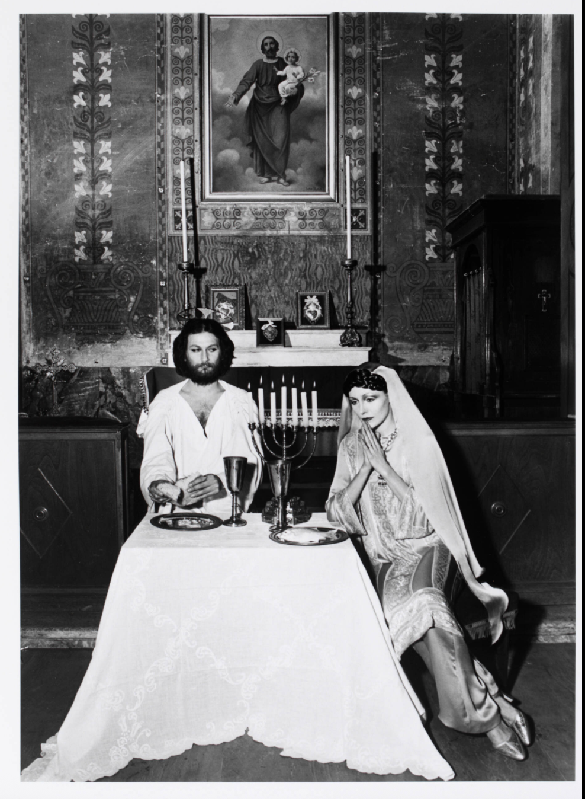
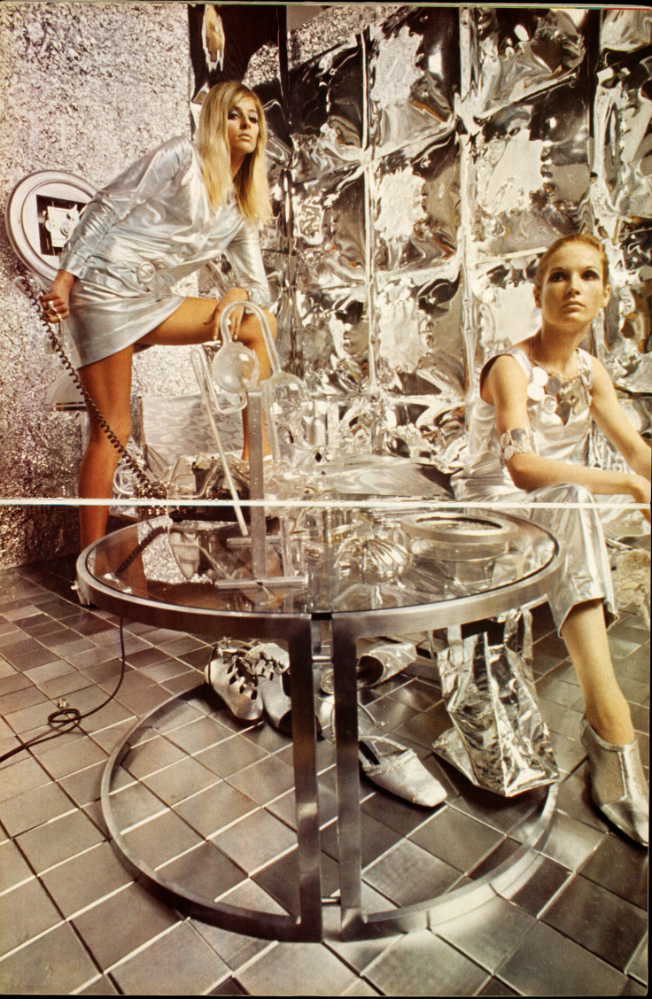
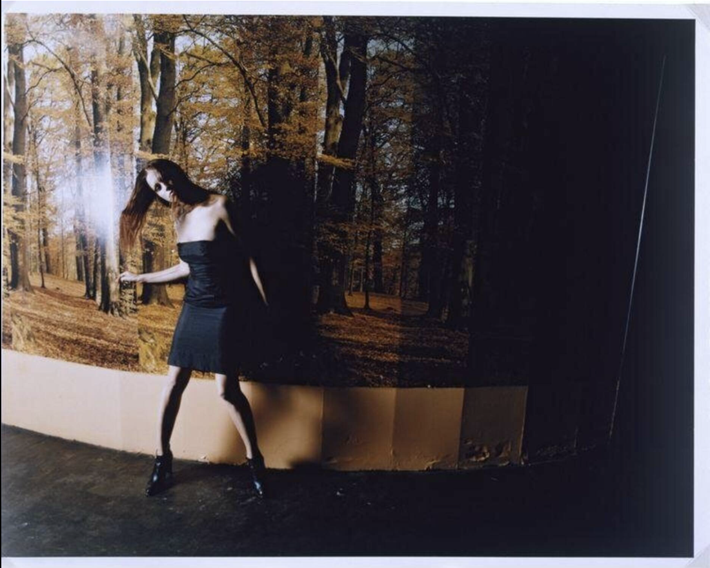

Editorial abstract collage of fashion photography across decades. Hover to read blurbs. Use the controls to shuffle the layout.
1950sPost-war polish and couture silhouettes photographed with crisp studio light; think Irving Penn’s poise.1960sYouthquake energy, mod minimalism and graphic shapes; editorial cool with playful motion.

1970sWarm film tones, boho to glam rock; Helmut Newton drama meets candid street attitude.

1980sPower shoulders, chrome shine, unapologetic flash; larger-than-life glamour.

1990sMinimalism, grunge edges, and supermodel era; Meisel’s clean lines to Corinne Day’s rawness.2000sDigital gloss, Y2K pop; sharp highlights and vibrant editorial color blocking.2020sHyper-clean, post-digital restraint; quiet luxury and color stories with softness.